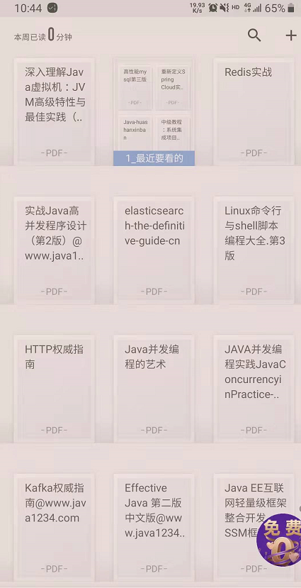

先简单介绍LZ 现如今的情况，LZ 1992年出生，2012年实习，大专学渣一枚，实习期直接被校企合作直招到公司做.NET开发，现如今在某三线城市做后端技术经理，7年开发经验（5年.Net，2年.NET、JAVA混合开发），写下此篇文章只是希望把近年来遇到坑和心中正在迷惑的同学能够在看完LZ的遭遇能有一个前车之鉴吧。首先声明本文没有批判任何语言的思想，只是为了在如今社会，求得一席之地能养家糊口而已。接下来LZ会以实际面试经历讲述这一过程中的尴尬与无奈.
事情源自于2017年初，.NET CORE刚刚兴起的时刻，这时LZ正面临职业技术瓶颈，为了打破瓶颈决定新学习JAVA语言（PS：当时.NET CORE刚刚发起，社区轮子和成熟的案例资源不够充足，LZ期望往高并发、大数据方向转型学习），所以找了我大学的好基友要了一套最基础的JAVA的开发框架，秉承先会用再深入的原则，结构如下：
依据.NET万能三层架构的原理，并且在简单学习了eclipse 的使用方法，jdk、maven、tomcat的配置，很快一个框架轮子就建设起来了（spring mvc、mybatis），有了框架剩下的就是学习这些组件如何使用，基本业务代码编写没有问题，在这套框架下我们内部两个小项目优先使用并成功上线，tomcat都部署在windows服务器上，项目本身多大的QPS，也都是单机部署，这样子LZ天真觉得使用JAVA开发也能熟能生巧（PS：没有这样的自我满足也不会有后面第一次面试JAVA的尴尬）。在这样的一度满足之下LZ决定第一次出去面试JAVA高级开发试试水。
有些同学可能会觉得拥有混合开发经验其实是一种职业优势吧，毕竟你懂两门开发语言（C#、JAVA），但是在JAVA生态圈内，大部分的JAVA中高级鄙视.NET的不在少数，包括外行HR认定的名词也只有"JAVA"，所以切记不要在简历上写你的.NET经验大于JAVA开发经验，，否则就算过了外行HR的关，也会被那些JAVA技术面试官在筛选的时候所PASS，从而面试机会都不会给你。
后来经过大学好基友的提醒，把简历改成2年.NET开发，5年JAVA开发，才能陆续收到面试通知。
.NET招聘者众所周知，近年来.NET面试者日益减少，优秀.NETer开发更是少之又少，尤其在各大高校取消C#这门课程之后，.NETer的招聘更是难上加难，所以在面试的时候自然而然就会降低要求，基本只要求思路清晰，上手快，能有创新和开阔性思维就更优的招聘方法来筛选求职者，这样子其实就更加造成了.Net开发人员对基础知识的贫乏，能用个List、数组基本就能满足大部分企业CRUD的场景了（PS：在三线城市更加能体现一个.NET的开发人员的人际圈关系绝对不会超过2个人）。所以LZ基于这样的惯性思想，事先也没有任何准备，就直接投了xxxx教育科技有限公司，上来就把LZ打蒙了。大概内容如下：
面试官：您好，请先做个自我介绍。
我：xxxx，几年开发经验，在公司负责电商等核心开发，等等.....
面试官：看你面试JAVA高级开发，那应该对spring很熟吧，从spring mvc角度切入讲解下spring 容器初始化过程，这期间BeanFactory是干什么的，ApplicationContext是干什么的,Spring中有哪些设计模式，如果让你来实现spring框架 ，你有什么思路。
我：..... ，除了会使用spring框架，和知道IOC的原理之外，其他相关spring 源码基本都没研究过啊。此处LZ内心就已经开始慌张了。
面试官：看我回答不出来，表面笑笑，估计肯定内心一篇鄙视，继续询问hashmap，hashtable看过源码么。怎么解决hash碰撞，1.7中hashmap实现和1.8实现有何区别，hashmap中，为何链表达到一定大小红要转为红黑树等....
我：心中继续mmb，只能继续支支吾吾答不出来。
很快这轮面试就结束了，LZ记得出来之后 ，当时是冬天零下几度，后背都被冷汗打湿了，不过虽然被虐还是拿到了中级JAVA开发的offer。因为这次LZ心里就知道自己欠缺的内容了。这里也揭示一个面试者的套路，当你对简历上的内容能够熟练回答出来的时候，很快面试官就会跳过，遇到稍微你回答不出来的内容时，他会给你死磕到底，打乱你的思维，摧毁你心底的防线，其实说白了就是为了压求职者的工资而已，更有甚者LZ有次面试，面试官非要吧LocalDateTime这个类中涉及到的方法和使用规则给他说一遍，在这个问题上沉寂了将近5分钟。（PS，工具类在使用的时候我们都是看方法参数和说明来使用了，除了常用的谁能全说出来完呢）
每年涌入it市场的JAVA求职者多如牛毛，很多同学在求职过程中，运气、实力缺一不可，相比LZ这样的大专学渣想在这样的市场求得一席之地更加困难，置于说能力比学历重要的话真的只能仁者见仁，智者见智了（呵呵），现在面试造火箭，入职拧螺丝已成常态，HR和企业在众多的java求职者中如何快速筛选，只能通过其求职者的个人亮点，能不能“造火箭”来看了，这其实也是企业招聘慢慢演变出来的，也能看出JAVA的竞争压力，但反观.NET市场，因为.NET CORE兴起，求职者凤毛麟角，在北上广企业也是有愿意高薪吸引高端人才的，市场出现这样的极端，也可以看成.NET 环境出现转机，但是在LZ三线城市内，某钩上刷出不到3页.NET招聘，和15页+的java招聘的对比也是心中无可奈何。大部分同学可以说LZ去北上广啊，但是家在这儿，人总要顾家，不到万不得已都不想背井离乡，远离妻儿与父母，现实也都有很多无奈。
生活不易，而作为IT开发人员，如果想要保持住眼前的稳定，只能不断学习，想.NET转JAVA的同学也都是至少3年+的工作经验了，看到LZ的尴尬经历希望能有一丝自己的想法，千万不要被旁人左右。企业转型是为了生存，而我们的转型（.NETCORE、JAVA）也是同样道理，至于35岁以后，相信人的经历和成熟也能使自己做出正确的判断了吧。
最后附上LZ近两年在看的书籍，给想学习JAVA的同学一些思路吧。
